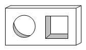
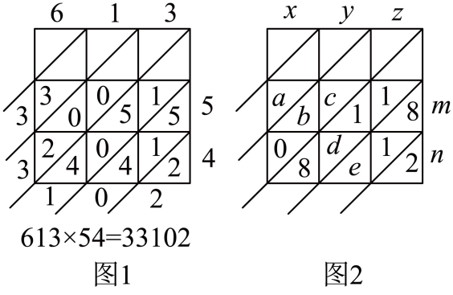
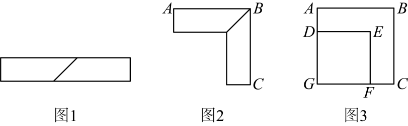
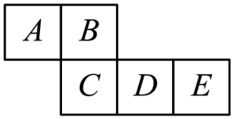
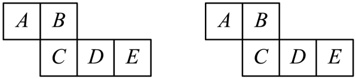
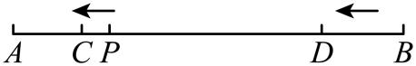

七年级数学上学期期中模拟卷·拔尖卷
【北师大版2024】
时间：120分钟 满分：120分 测试范围：第1章 丰富的图形世界~第3章 整式及其加减
姓名：___________班级：___________考号：___________
考卷信息：
本卷试题共24题，单选10题，填空6题，解答8题，满分120分，限时120分钟，本卷题型针对性较高，覆盖面广，选题有深度，可量化学生的掌握程度！
第Ⅰ卷
一．选择题（共10小题，满分30分，每小题3分）
1．（3分）（2025·湖北十堰·三模）几种液体的凝固温度（标准大气压）如下表：其中凝固温度最低的是（ ）
液体 | 水银 | 酒精 | 水 | 乙醚 |
凝固温度（℃） | −39 | −114 | 0 | −117 |
A．水银 B．酒精 C．水 D．乙醚
2．（3分）用一个平面去截六棱柱，截面形状不可能是（ ）
A．三角形 B．圆 C．四边形 D．六边形
3．（3分）若1+2x2+2y−3=0，则xy=（ ）
A．16 B．1 C．±1 D．−18
4．（3分）（24-25七年级上·全国·期末）已知a、b互为相反数，c、d互为倒数，m的绝对值为1，p是数轴上到原点距离为1的数，那么p2024−cd+a+babcd+m2+1的值是（ ）
A．3 B．2 C．1 D．0
5．（3分）如图是一块带有圆形空洞和矩形空洞的小木板，则下列物体中最有可能既可以堵住圆形空洞，又可以堵住矩形空洞的是（ ）

A．正方体 B．球 C．圆锥 D．圆柱体
6．（3分）（2025七年级上·全国·专题练习）如图，小明将画在纸上的数轴对折，把表示−3的点与表示1的点重合，此时与表示−2025的点重合的点表示的数是（ ）
A．2024 B．2023 C．2022 D．2021
7．（3分）（24-25七年级上·北京西城·期末）下列图形中可以作为一个长方体的展开图的是（ ）
A． B．
B．
C． D．
D．
8．（3分）将1，2，3，4，…，60这60个自然数，任意分成30组，每组两个数，将每组的两个数中的任意一个数记做a，另一个数记做b，代入代数式a−b+a+b中进行计算，求出结果，30组分别代入后可求出30个结果，则这30个值的和的最大值是（ ）
A．2730 B．1565 C．1735 D．1830
9．（3分）（24-25八年级上·重庆秀山·期末）在5个字母a，b，c，d，e中（均不为零），不改变字母的顺序，在每相邻两个字母之间都添加一个“+”或者一个“-”组成一个多项式，且从字母a，b之间开始从左至右所添加的“+”或“-”交替依次出现，再在这个多项式中，任意添加两个括号（括号内至少有两个字母，且括号中不再含有括号），添加括号后仍只含有加减运算，然后再进行去括号运算，我们称为“添减括号操作”．
例如：a+b−c+d−e=a+b−c−d−e，a+b−c+d−e=a+b−c−d+e．
下列说法：
①所有的“添减括号操作”共有7种不同运算结果；
②不存在两种“添减括号操作”，使它们的运算结果求和后为0；
③存在“添减括号操作”，使其运算结果与其未加括号之前的多项式相等．
其中正确的个数是（ ）
A．0 B．1 C．2 D．3
10．（3分）（24-25九年级上·重庆丰都·期末）“铺地锦”是我国古代一种乘法运算方法，可将多位数乘法运算转化为一位数乘法和简单的加法运算．如图1所示的“表格算法”，图1表示613×54，运算结果为33102．图2表示一个三位数与一个两位数相乘．下列说法：①m=6；②n=6；③y=7；④运算结果大于16000．根据图1的运算规律判断其中正确的有（ ）

A．1个 B．2个 C．3个 D．4个
二．填空题（共6小题，满分18分，每小题3分）
11．（3分）如图，在单位长度是1的数轴上，点A和点C所表示的两个数互为相反数，则点B表示的数是 .
12．（3分）（24-25七年级下·黑龙江绥化·期末）用“→”，“←”定义新运算：对于任意有理数a，b，都有a←b=−a和a→b=b，例如：3←2=−3，3→2=2，则(2025←2023)←(2023→2024)= ．
13．（3分）将图1周长为4a+20的矩形剪开做成图2的“直角尺”（不重叠无缝隙），用此直角尺测得图3中小正方形DEFG的边长为a+2，则AB的长为 （用含a的式子表示）．

14．（3分）黑龙江省第五届旅游发展大会将于2023年夏季在大庆市举办，为“迎旅发”，创建美丽城市，九年级学生设计了正方体废纸回收盒，如图所示，将写有“庆”字的正方形添加到图中，使它们构成完整的正方体展开图，共有 种添加方式．
15．（3分）（24-25六年级上·全国·期末）用若干个大小相同的小正方体搭一个几何体，从左面看和从上面看得到的形状图如图所示，则搭一个这样的几何体最少需要 个小正方体 ，最多需要 个小正方体．

16．（3分）（24-25七年级下·北京顺义·期末）某市将举办“创意与科创成果”主题展览．距离展览开幕还有7天，有四个不同的展区需要布置展品．布置每个展区需要一定数量的志愿者连续合作若干天完成，所需的志愿者人数（单位：人）和天数（单位：天）如下：
展区 | A | B | C | D |
志愿者人数 | 3 | 5 | 4 | 2 |
天数 | 4 | 3 | 2 | 5 |
（1）如果开幕前将每个展区都布置完成，主办方至少应招募 名志愿者；
（2）每名志愿者的补贴标准为：每天补贴m元，天数按照所有展区布置完成的天数计算．若主办方准备的补贴预算不超过50m元，且要在最短时间内完成工作，请问最少 天布置完成．
第Ⅱ卷
三．解答题（共8小题，满分72分）
17．（6分）（24-25七年级下·全国·假期作业）计算下面各题．
①12+13+14+15×13+14+15+16−12+13+14+15+16×13+14+15
②18+19+110+111×19+110+111+112−18+19+110+111+112×19+110+111
18．（6分）（24-25七年级上·山西临汾·阶段练习）随着“抖音”的兴起，很多农产品改变了原来的销售模式，实行了网上销售，一苹果种植户在抖音平台上直播销售苹果，周日结束时家中库存水果30箱、后续5天的直播中边采摘边销售，其采摘销售水果的情况如下表：
周一 | 周二 | 周三 | 周四 | 周五 | |
采摘（单位：箱） | 50 | 65 | 30 | 49 | 0 |
销售（单位：箱） | 30 | a | 53 | 39 | 33 |
与前一天库存相比（增加记作“+”，减少记作“−”） | +20 | +13 | −23 | b | −33 |
(1)直接写出a，b的值：a=______，b=______；
(2)哪一天直播销售结束时库存水果的数量最多，最多库存多少箱？
19．（8分）（24-25六年级上·山东烟台·期中）下图是由若干个小立方块所搭建几何体从正面看与从上面看的形状图．

(1)搭建这个几何体最少、最多各需多少个小立方块？搭建这个几何体需小立方块最少、最多可能有多种搭建方式，请你各拿出一种在从上面看的形状图的小正方形中用数字表示该位置所放小立方块的个数；
(2)搭建该几何体有多种搭建方式，请你画出其中三种从左面看的形状图．
20．（8分）数轴上表示数a的点与原点的距离叫做数a的绝对值，记作a，数轴上表示数a的点与表示数b的点的距离记作a−b，如数轴上表示数5的点与表示数7的点的距离为5−7=2，5+7=5−−7表示数轴上表示数5的点与表示数−7的点的距离，a−5表示数轴上表示数a的点与表示数5的点的距离．根据以上材料回答下列问题：

(1)①若x−2=3，则x=_____，
②x−3+x+2=5，则x的取值为_____；
(2)x+1+x−2+x−3最小值为_____；
(3)求x−2020+2x−2021+3x−2022+4x−2023+5x−2024的最小值，并求出此时x的取值范围．
21．（10分）把正整数1，2，3，4，…，排列成如图1所示的一个表，从上到下分别称为第1行、第2行、…，用图2所示的方框在图1中框住16个数，把其中没有被阴影覆盖的四个数分别记为A，B，C，D，设A=x．

(1)在图1中，2021排在第 行第 列；
(2)A−B+C−D的值是否为定值？如果是，请求出它的值；如果不是，请说明理由；
(3)将图1中的奇数都改为原数的相反数，偶数不变．
①设此时图1中排在第m行第n列的数（m，n都是正整数）为w，请用含m，n的代数式表示w；
②此时A+B−C−D的值是否为定值？如果是，请求出它的值；如果不是，请说明理由；
22．（10分）如图是一个无盖正方体纸盒的表面展开图，请解答下列问题：

(1)若在图上补上一个同样大小的正方形F，便它能围成一个正方体，共有______种补法；
(2)请画出两种不同的补法；

(3)设A=a2+2a+1,B=4−b2,C=a2−1,D=23−a，若（1）中的展开图围成正方体后，相对两个面的代数式之和都相等，求E、F所代表的代数式．
23．（12分）任意一个正整数n都可以分解为两个正整数的乘积：n=p×q（p，q是正整数，且p≤q），在n的所有这种分解中，当q−p最小时，称p×q是n的最佳分解，并规定：Fn=pq．例如：3的最佳分解是3=1×3，F3=13，20的最佳分解是20=4×5，F20=45．
(1)直接写出：F2=___________；F9=___________；F12=___________；
(2)如果一个两位正整数t，交换其个位上的数与十位上的数得到新的两位数记为t′，且t′−t=18．
①求出正整数t的值；
②我们称数t与t′互为一对“吉祥数”，直接写出所有“吉祥数t”中Ft的最大值；
(3)在（2）条件下，在“吉祥数t”的中间再插入另一个“吉祥数p”组成一个四位数M，再在“吉祥数t′”中间插入“吉祥数p′”（p与p′互为一对“吉祥数”），又得到一个新的四位数N，请用字母表示四位数M、N，并求N−M的值．
24．（12分）（24-25七年级上·江苏无锡·阶段练习）如图，点P是定长线段AB上一定点，点C，D分别从点P，B同时出发以acm/s，bcm/s的速度沿直线AB向左运动（点C在线段AP上，点D在线段BP上），其中a、b满足条件：a−1+b−3=0．运动的时间为ts，且点C，D运动到任一时刻，总有PD=3AC．

(1)直接写出：a=_____，b=_____；
(2)若AB=24cm，请求出AP的长；
(3)若点Q是直线AB上一点，且AQ−BQ=PQ，求PQAB的值；
(4)若C、D运动5秒后，恰好有AB=2CD，此时C点停止运动，D点继续运动（D点在线段PB上），M、N分别是CD、PD的中点，问MNAB的值是否发生变化？若变化，请说明理由，若不变，请求出MNAB的值．